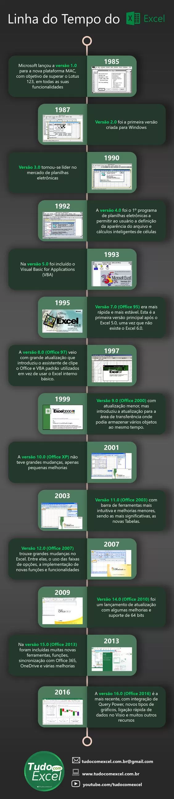

História do Excel
Veja neste artigo a polêmica história do Excel, como surgiu, quando foi criado e em meio a que momento histórico foi lançado no mercado, revolucionando as planilhas eletrônicas.
Muitas vezes não imaginamos, mas há muitos detalhes esquecidos ou desconhecidos nas histórias de softwares no que tange a seus lançamentos e inserções no mercado. Veja o Excel, a sua criação possui ligação com o a história da informática, na Terceira Revolução Industrial, mais precisamente, com a implantação da tecnologia à vida da população.
Os computadores mais modernos da época foram lançados na Segunda Guerra Mundial, porém ainda eram muito grandes, ocupando, muitas vezes, um cômodo somente de aparelhos. Mais tarde, por volta dos anos 70, se as pessoas quisessem ter um computador em sua casa, estas teriam que comprar as peças e montar sua máquina em casa.
Contudo, somente em 1978, com Steve Jobs, que os computadores tornaram-se PC’s (Personal Computers ou Computadores Pessoais, traduzindo para o português), chegando montados, prontos para o uso, na casa de seus usuários. Mas, mesmo estando tão práticos, as pessoas não viram utilidade, aplicação prática do computador em suas casas, pois, além da internet ainda não estar disseminada, as funções dos PC’s eram, geralmente,programadas em apenas uma tela.

Foi então que, em meio a esta situação, foram lançados os primeiros programas de planilhas, o Multiplan e o Lotus 123, que chegaram a ser chamados de “killer app”, ou aplicativo matador, e foram estes que impulsionaram as vendas de computadores. O Multiplan lançado em 1982 e popular em sistemas CP/M, não se equiparava o Lotus 123 que dominava o mercado para MS-DOS.
Em 1984 foi lançado o primeiro Macintosh (MAC), lançado pela Apple, e eles precisavam de um novo programa, inovador, para estimular suas vendas. Foi então que a Microsoft iniciou o projeto de desenvolvimento do Excel, programa que tinha como intuito superar o atual adversário que estava ganhando espaco no mercado, o Lotus 123, em todas as suas funcionalidades. Logo em 1985, a Microsoft lançou a versão 1.0 para a plataforma MAC, lançando sua versão 2.0 para Windows somente em 1987.
Quando lançado, o Excel foi alvo de um processo bem polêmico, devido ao fato de já existir um pacote de softwares com este nome, e a patente já registrada. Foi então decidido, em julgamento, que a Microsoft teria de se referir ao programa como “Microsoft Excel”. Porém, esta decisão foi respeitada por muito pouco tempo pela empresa, pois, alguns anos depois, ela acabou comprando a patente de nome “Excel”.
Com a lentidão do Lotus 123 em se lançar no ambiente Windows, o Excel foi ganhando terreno, tendo assumido a liderança por volta de 1988. A vantagem só se alargou nos anos seguintes com o lançamento de novas versões do Excel.
Mesmo com todos os seus recursos avançados, o Excel continua mantendo a essência do VisiCalc, a primeira planilha eletrônica, lançada em 1979: linhas e colunas cujas interseções criam células. As células são os elementos fundamentais contendo dados numéricos, sob a forma de texto ou Booleanos (Verdadeiro / Falso), e as fórmulas que realizam cálculos referenciando outras células principalmente.

A Microsoft Excel se mostrou, portanto, uma grande revolucionária no campo das planilhas eletrônicas, avançando mais rapidamente que sua concorrência. Foi ela, por exemplo, a primeira a permitir a modificação de fonte, cor, tamanho, tudo com a máxima facilidade para o usuário, e contando com um lançamento regular de novas versões aproximadamente a cada dois anos. A versão atual para a plataforma Windows é o Excel 16, também chamado de Microsoft Excel 2016. Já, a versão atual para a plataforma Mac OS X é o Microsoft Excel 2015.

Seu último grande marco foi com a inclusão da linguagem de programação Visual Basic for Applications (VBA), disponibilizada desde a versão 5.0 do software, integrando o Excel e os demais membros do Pacote Office. O VBA, por sua vez, é um complemento poderoso ao aplicativo que, em versões posteriores, incluiu um ambiente integrado de desenvolvimento (IDE, Integrated Development Environment). A gravação de macros pode produzir código VBA que replica ações do usuário, permitindo automação simples de tarefas cotidianas. Permite, também, a criação de formulários e controles dentro da pasta de trabalho para comunicação com o usuário.
A funcionalidade de automação provida pelo VBA fez com que o Excel se tornasse um alvo para vírus de macro. Esse foi um problema sério no mundo corporativo, até os produtos antivírus começarem a detectar tais ameaças. A Microsoft adotou tardiamente medidas para prevenir o mau uso, com a adição da capacidade de desativar as macros completamente, de ativar as macros apenas quando se abre uma pasta de trabalho ou confiar em todas as macros assinadas com um certificado confiável. No entanto, desde a versão 10, a Microsoft tomou medidas para eliminar tais recursos não documentados de seus produtos.
A seguir, veja a evolução das versões do Excel na sua plataforma para Windows:
- 1985: Excel 1.0 para Windows;
- 1987: Excel 2.0;
- 1990: Excel 3.022;
- 1992: Excel 4.0;
- 1993: Excel 5.0 (Office 4.2 e 4.3, também uma versão de 32 bits para o Windows NT somente);
- 1995: Excel 7.0 (Office 95);
- 1997: Excel 8.0 (Office 97);
- 1999: Excel 9.0 (Office 2000);
- 2001: Excel 10.0 (Office XP);
- 2003: Excel 11.0 (Office 2003);
- 2007: Excel 12.0 (Office 2007);
- 2010: Excel 14.0 (Office 2010);
- 2013: Excel 15.0 (Office 2013);
- 2015: Excel 16.0 (Office 2016).

Contudo, o Microsoft Excel, ou simplesmente Excel, é, sem dúvidas, a melhor e mais completa ferramenta de que dispomos hoje no que tange a criação e uso de planilhas eletrônicas. Permite-nos usufruir ao máximo suas potencialidades, dispondo-nos infinitas formas e modos para executarmos nossas atividades. Evoluindo cada vez mais com o passar dos anos, o Excel tornou-se mais acessível e funcional, estando à disposição para toda a população.
Aproveitem esta dica pessoal, essa é uma das funções mais uteis do Excel e pode lhe poupar muita dor de cabeça.